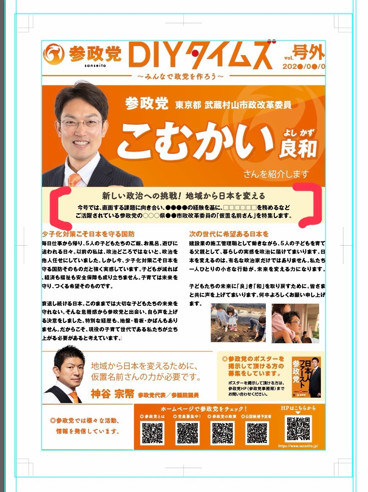
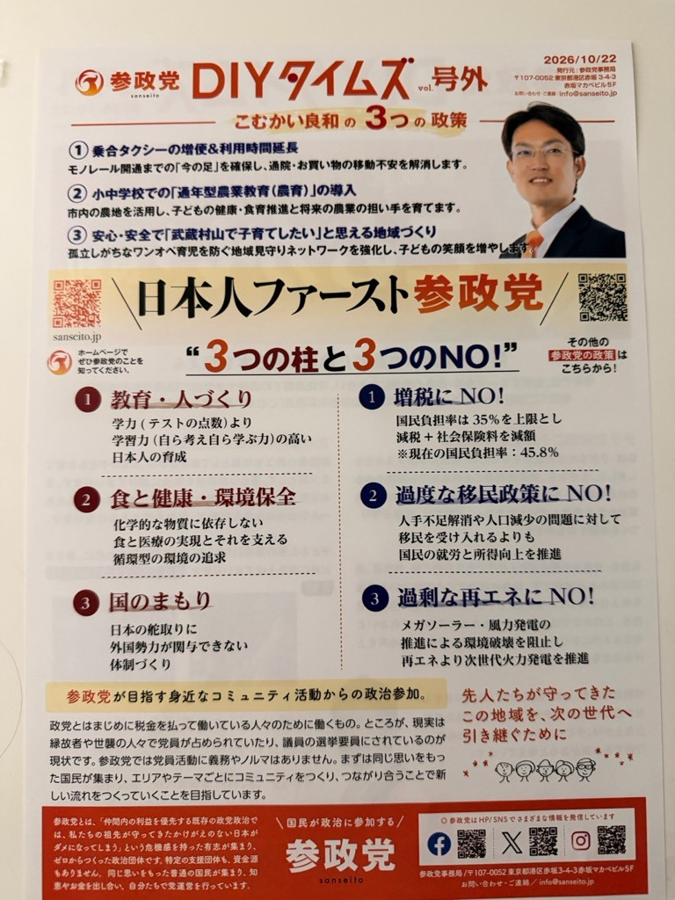

1
教育・人づくり
市内の農地を活かし、小中学校での「通年型農業教育」の推進を目指します。子どもたちが地域と食を学ぶ機会を大切にします。
子どもたちの未来に
「良」き「和」を。
武蔵村山市の暮らしと未来を、
地域の皆さまとともに考え、行動する政治を。
市内の農地を活かし、小中学校での「通年型農業教育」の推進を目指します。子どもたちが地域と食を学ぶ機会を大切にします。
日々の食を大切にし、地域の農地や環境、健康的な暮らしについて考えます。
次の世代に引き継ぐ日本のあり方について考え、安心して暮らせる地域づくりを目指します。
建築施工管理の現場経験と子育ての実感を、地域の課題を考える視点として大切にしています。

ご提供いただいた紹介紙面を掲載しています。政策や活動について知るための資料です。

子育てや地域の課題に関する考えを掲載した資料をご覧いただけます。
※掲載資料はご提供いただいたものです。実際の活動報告は、日時と内容を確認でき次第更新します。
ご意見・ご相談などをお寄せください。
お問い合わせ窓口は現在準備中です。公開の際はこちらでお知らせいたします。